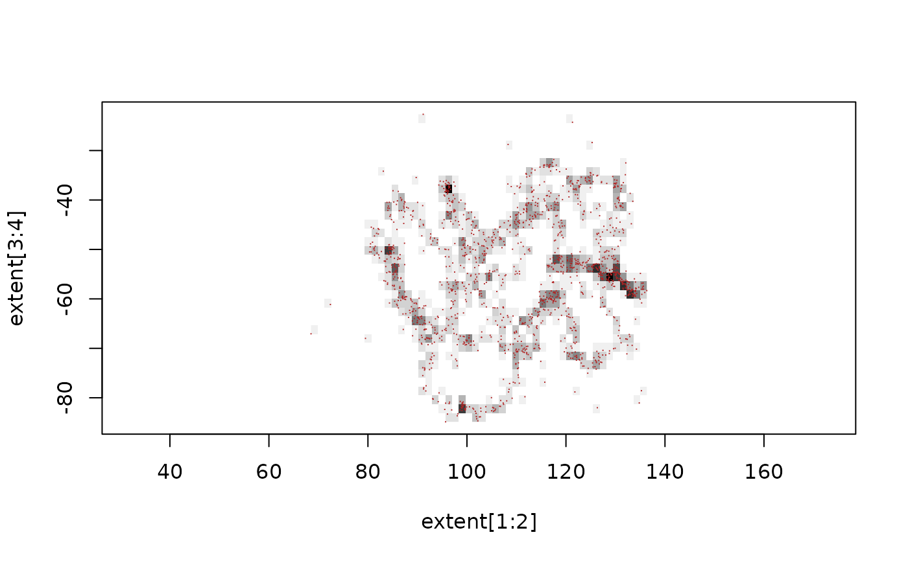

Computes the cell a track location point falls in on a grid.
track_grid(x, y, dimension, extent = NULL)cell index of each input point in the grid specification
A grid is defined by a 'dimension' ('ncol', 'nrow') and 'extent' ('xmin', 'xmax', 'ymin', 'ymax'). The cell index returned is in 'raster order', this is by top row, left to right and down as per 'rasterImage'. This is aligned with usage in the Github organization 'hypertidy' packages 'vaster' and 'ximage', and is how other raster packages work.
This function doesn't care if the x,y input values are longitude latitude or x, y and it makes no difference at all. No account of movement between points is made.
dimension <- c(50, 35)
extent <- c(range(trips0$x), range(trips0$y))
cells <- track_grid(trips0$x, trips0$y, dimension = dimension, extent = extent)
plot(extent[1:2], extent[3:4], asp = 1, type = "n")
tab <- tabulate(cells, nbin = prod(dimension))
rasterImage(matrix(1 - (tab/max(tab)), dimension[2L], byrow = TRUE),
extent[1L], extent[3L], extent[2L], extent[4L], interpolate = FALSE)
points(trips0$x, trips0$y, pch = ".", col = "firebrick")
